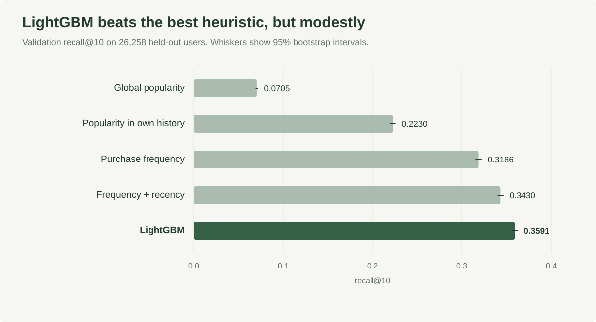
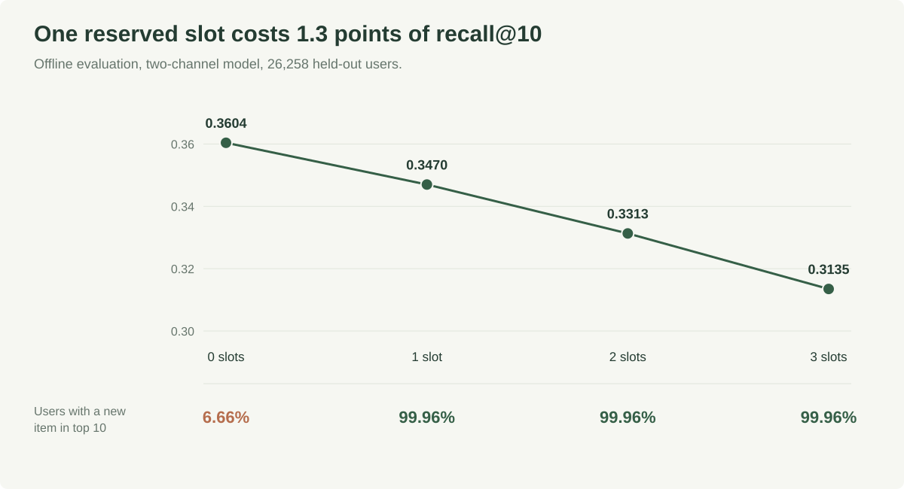

Recommending the next grocery basket
tl;dr: Should a grocery recommender save a slot for something you have never bought? I built a LightGBM ranker on 3.4 million Instacart orders and measured offline that one reserved slot costs 1.3 percentage points of recall@10. Whether it pays off in spend needs an experiment, so I designed one: 4,849 households per arm to detect a $19 difference.

The problem
Given a shopper’s history, what goes in their next grocery basket? And should the recommender save a slot for something they have never bought? I built and evaluated the ranker on Instacart (3.4 million orders) and used a separate dunnhumby dataset for spend data. The two are never joined.
What I built
I started with simple baselines: global popularity, popularity within the shopper’s history, purchase frequency and a tuned frequency-and-recency rule. LightGBM reached recall@10 of 0.3591, against 0.3430 for the best rule. Useful but modest. Restricting candidates to a shopper’s own history mattered more than any ranker.
DuckDB handles the large joins out of core, features only use prior orders and the repo includes data checks, a FastAPI service, a Streamlit demo and Docker.
The real limit
About 40% of a next basket is items the shopper has never bought, and a repeat-only system can never surface them. I added a co-occurrence channel for new items, but the ranker still rarely picked them, so I tested reserving slots. All results here are offline: top-10 lists for 26,258 held-out users scored against their actual next baskets.

Against the unconstrained two-channel model, one reserved slot lowered recall@10 from 0.3604 to 0.3470, 1.3 percentage points (about 3.7% relative). It included a new item in the top-10 recommendations for 99.96% of evaluated users, up from 6.66%.
Does it pay off?
Instacart has no prices, so I used dunnhumby to plan a spend test. Raw comparisons there mislead: households picked for campaigns spent $118 to $287 more than other households. Difference-in-differences instead compares the change in spending among campaign households, from an equally long window before the campaign to the campaign period, with the same change among comparison households. On that basis, four of five campaigns were indistinguishable from zero.
A randomized test of one discovery slot would need 4,849 households per arm to detect a $19 difference. I designed it, but I have not run it.